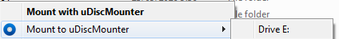
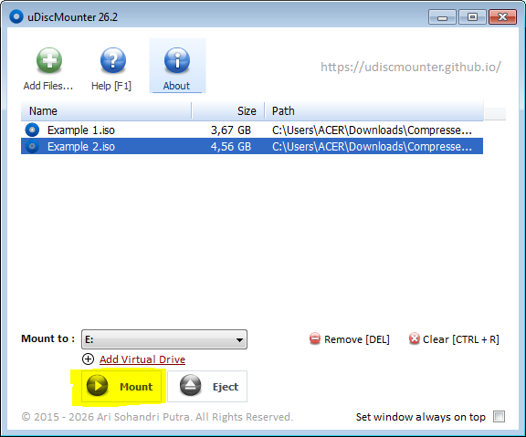
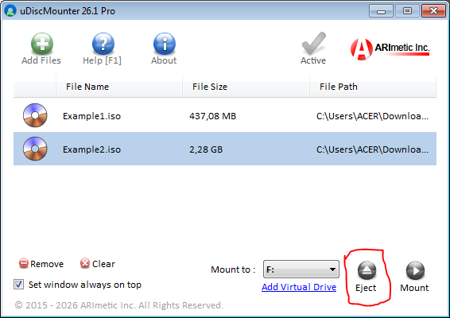
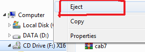

| uDiscMounter Virtual Drive & Disk Image Mounting Software. |
|
Operations: Mount & Eject FilesHow to activate uDiscMounter Pro << >> How to add a virtual drive in uDiscMounter 1. Mount Files, click "Add Files" button, then select CD/DVD image files to mount.  2. Select the file you wish to mount, then click the "Mount" button as shown in the image below.  3. There are two ways to eject a mounted file. First, you can use uDiscMounter by clicking the "Eject" button. Alternatively, you can eject it through Windows Explorer by right-clicking the virtual drive and selecting "Eject."   |
| © 2015 - 2026 ARImetic. All Rights Reserved. | License • Contact |